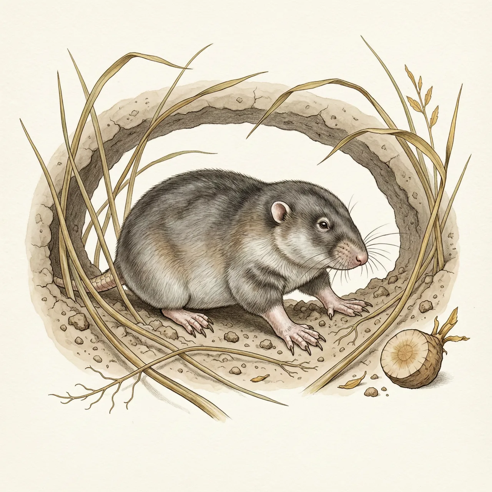
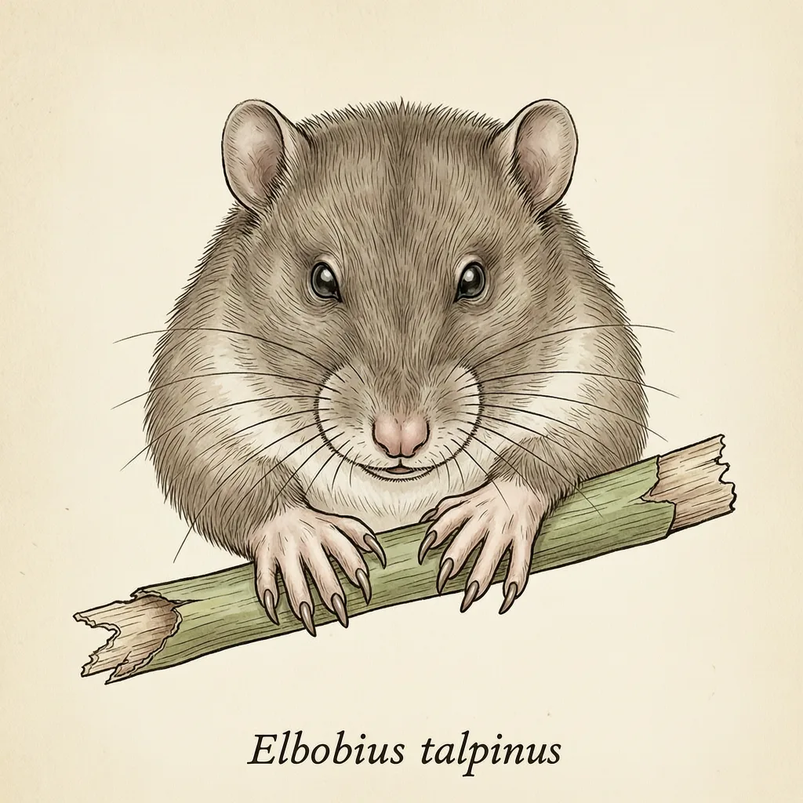

分布于亚洲北部草原与荒漠的仓鼠科小型啮齿动物，眼睛缩进皮下、前爪宽厚，几乎终生生活在地下，一家人共用一套隧道，啃食洞壁上的草根与块茎。更罕见的是它的Y染色体已经消失，决定雄性的基因换到了别的染色体上继续工作。该种的模式产地定在伏尔加河。
从伏尔加河流域一直到中国新疆、内蒙古，草原与荒漠的表土之下常年有一层被啃断的草根。鼹形田鼠就住在这层土里：干燥松软的沙壤好挖，草根与块茎就长在洞壁上，现成可食，它几乎不用冒头见光。这个种的眼睛缩进皮下，前爪宽厚，一辈子的工作是刨土。它的模式产地定在伏尔加河。
鼹形田鼠把家整个安在土里：一家人共用一套隧道，掘进、觅食、繁殖都在这套洞中完成。对一只几乎不上地面的啮齿类来说，隧道既是房子也是粮仓，它啃的草根与块茎就在身周的洞壁上，等于住在食物里。也正因如此，冒头是最后的选择——离开土层意味着把自己交给地面上的天敌，土里反而安全。
鼹形田鼠最古怪的地方在细胞里：这个物种的Y染色体已经消失，决定雄性性别的SRY基因换到了第二号染色体上继续工作。换句话说，雄性鼹形田鼠带着一套没有Y的身体照常发育、留下后代。锚文对这一点只有短短一句，但足够反直觉——很多人以为Y染色体是哺乳动物雄性的固定配置，而在中亚干草原的土层下面，它已经整条丢掉了。
